Ação / Sobrevivência (13)

Vampireville
O governo obterá em breve o direito de vender o Castelo de Malgrey, porque nenhum herdeiro...
Ver Tradução
Dead Island (todas as versões)
O jogo que redefiniu o género zombie – totalmente remasterizado. O paraíso torna-se num in...
Ver Tradução
GTA - Vice City
Bem-vindo de volta a Vice City. Bem-vindo de volta aos anos 80. Da década do cabelo compri...
Ver Tradução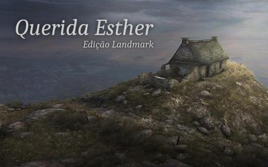
Querida Esther Edição Landmark
Querida Esther é um jogo em primeira pessoa em que, ao contrário dos jogos habituais, o pr...
Ver TraduçãoGTA 3
O sucesso aclamado pela crítica Grand Theft Auto III traz para as três dimensões o sombrio...
Ver Tradução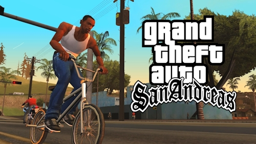
GTA - San Andreas
Há cinco anos atrás, Carl Johnson escapou das pressões da vida em Los Santos, San Andreas....
Ver Tradução
The Path
Parado num bosque nevado, é surpreendido por uma pitada de névoa e de repente está na Flor...
Ver Tradução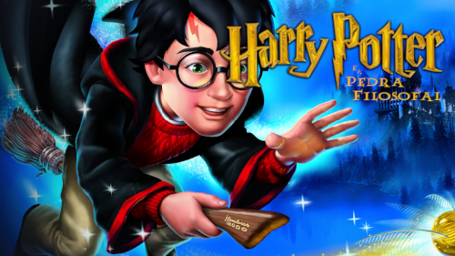
Harry Potter e a Pedra Filosofal
Quando Harry Potter soube que era um feiticeiro e um bilhete misterioso lhe chegou, ele fo...
Ver Tradução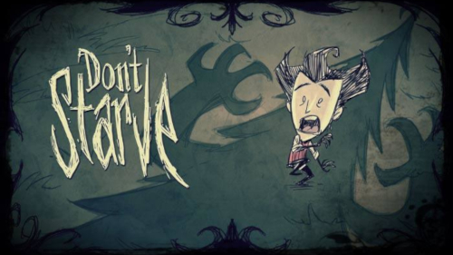
Don't Starve
Não deixes a escuridão levar-te. Don't Starve é um jogo de sobrevivência na selva com ciên...
Ver Tradução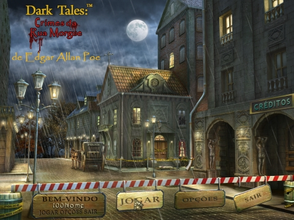
Dark Tales - Crimes da Rua Morgue
Dupin, um famoso detetive, pede a tua ajuda para resolver um crime horrível. Um assassino...
Ver Tradução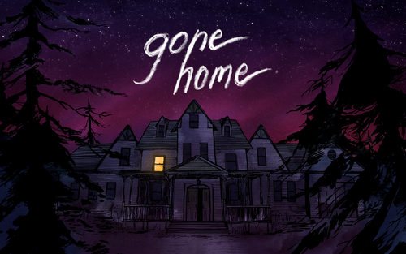
Gone Home
7 de junho de 1995, 1h15 da manhã. Regressas a casa depois de um ano no estrangeiro. Esper...
Ver Tradução
Cry of Fear
Em Cry of Fear, terás de explorar e navegar pela cidade decadente e abandonada e os seus m...
Ver Tradução
Limbo
Atreves-te a entrar no mundo sombrio de LIMBO? Esta fantástica aventura dá-te o controlo d...
Ver TraduçãoMistério (11)
Vampireville
O governo obterá em breve o direito de vender o Castelo de Malgrey, porque nenhum herdeiro...
Ver Tradução
Twisted Lands - A Origem
Em Twisted Lands: A Origem, assume o papel de um detetive talentoso que sempre confiou no...
Ver Tradução
Doors Paradox
Tanto quanto nos é possível lembrar, temo-nos situado na linha ténue entre o caos e a orde...
Ver Tradução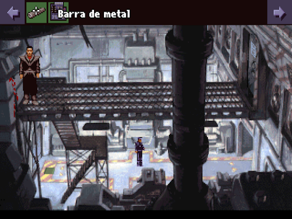
Beneath a Steel Sky
Depois de ser raptado por soldados brutais e de testemunhar o massacre dos seus familiares...
Ver Tradução
A Pedra de Anamara em português
A Pedra de Anamara, desenvolvido por Gabriel Rodríguez, o criador argentino, é um jogo fla...
Ver Tradução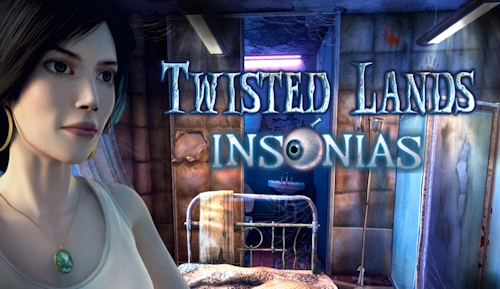
Twisted Lands - Insónias
A saga continua na sequela do mais vendido jogo da temporada. Banhado de terror psicológic...
Ver Tradução
Twisted Lands - Ilha Sombria
Bem-vindo à Ilha Sombria. Aqui vêem-se praias, mas representam um perigo para quem se apro...
Ver TraduçãoQuerida Esther Edição Landmark
Querida Esther é um jogo em primeira pessoa em que, ao contrário dos jogos habituais, o pr...
Ver Tradução
The Path
Parado num bosque nevado, é surpreendido por uma pitada de névoa e de repente está na Flor...
Ver TraduçãoGone Home
7 de junho de 1995, 1h15 da manhã. Regressas a casa depois de um ano no estrangeiro. Esper...
Ver Tradução
Cry of Fear
Em Cry of Fear, terás de explorar e navegar pela cidade decadente e abandonada e os seus m...
Ver TraduçãoQuebra-cabeças (17)

The Ball
Enquanto intrépido arqueólogo que labora nas encostas de um vulcão adormecido algures no M...
Ver Tradução
Vampireville
O governo obterá em breve o direito de vender o Castelo de Malgrey, porque nenhum herdeiro...
Ver Tradução
Twisted Lands - A Origem
Em Twisted Lands: A Origem, assume o papel de um detetive talentoso que sempre confiou no...
Ver Tradução
Doors Paradox
Tanto quanto nos é possível lembrar, temo-nos situado na linha ténue entre o caos e a orde...
Ver Tradução
Helltaker
Acordas um dia com um sonho. Um harém cheio de raparigas demónio. Abres o portal na espera...
Ver Tradução
A Pedra de Anamara em português
A Pedra de Anamara, desenvolvido por Gabriel Rodríguez, o criador argentino, é um jogo fla...
Ver Tradução
Vizinhos Voltam do Inferno (2020)
Sabias que a palavra alemã "Schadenfreude" define o conceito de encontrar alegria na infel...
Ver Tradução
Vizinhos do Inferno 2
O Sr. Rotweiler precisava de uma pausa para respirar das partidas do Woody, por isso decid...
Ver Tradução
Vizinhos do Inferno
O teu vizinho do lado é deveras irritante. Está na hora da tua vingança! Cerca-lhe a casa...
Ver TraduçãoTwisted Lands - Insónias
A saga continua na sequela do mais vendido jogo da temporada. Banhado de terror psicológic...
Ver Tradução
Twisted Lands - Ilha Sombria
Bem-vindo à Ilha Sombria. Aqui vêem-se praias, mas representam um perigo para quem se apro...
Ver Tradução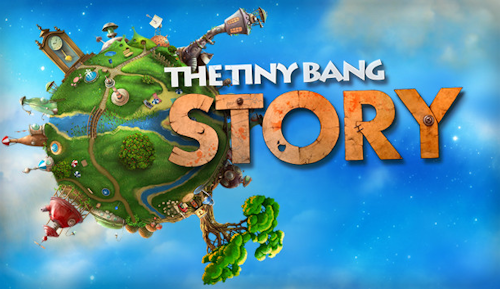
The Tiny Bang Story
A vida no Pequeno Planeta era tranquila e despreocupada até que ocorreu um grande desastre...
Ver Tradução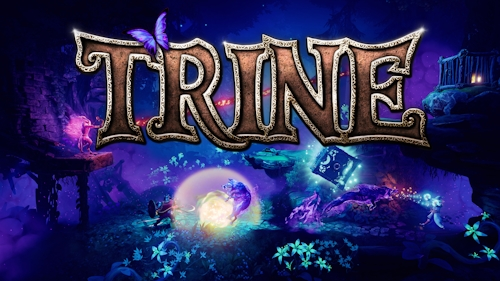
Trine
Trine acompanha três personagens ligadas pelo destino e um objecto mágico denominado Trine...
Ver Tradução
World of Goo
World of Goo é um jogo de quebra-cabeças baseado na física. A grande maioria dos níveis en...
Ver TraduçãoDark Tales - Crimes da Rua Morgue
Dupin, um famoso detetive, pede a tua ajuda para resolver um crime horrível. Um assassino...
Ver Tradução
Limbo
Atreves-te a entrar no mundo sombrio de LIMBO? Esta fantástica aventura dá-te o controlo d...
Ver Tradução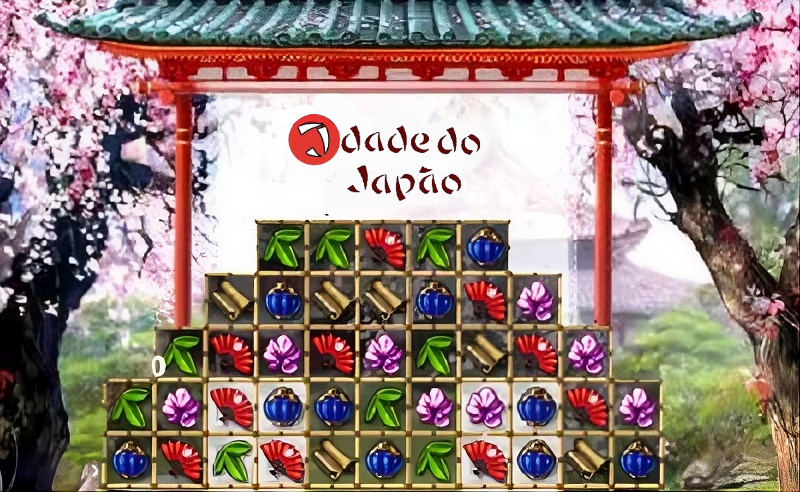
Idade do Japão
Se pensas que viste todos os jogos de troca de mosaicos é porque não jogaste Idade do Japã...
Ver TraduçãoCorrida (4)

Extreme TuxRacer
Extreme Tux Racer é um jogo de corrida em OpenGL que apresenta Tux, a mascote do Linux. O...
Ver Tradução
SuperTuxKart
Mais que fazê-lo realista, queremo-lo divertido. Conhece o grande farol ou então traspassa...
Ver Tradução
Blur (atualizado)
Blur é um jogo de carros de corrida elegante em espaços realistas e 50 carros reais em lut...
Ver Tradução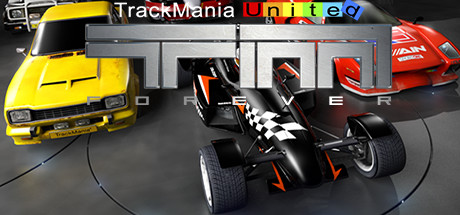
Trackmania United Forever
Trackmania é o jogo de corridas de carros de maior entretenimento de sempre. Milhões de jo...
Ver TraduçãoEstratégia (4)

Transport Giant e expansão Down Under
É o ano de 1850: o mundo está a mudar. Uma nova era de produção e transporte em massa come...
Ver Tradução
Medieval II - Total War
Gerirás o teu império com punho de ferro, tratando de tudo, desde a construção e melhoria...
Ver Tradução
Glest
Glest é um gratuito jogo 3D de estratégia em tempo real, no qual controlas os exércitos de...
Ver Tradução
Widelands
Widelands é um jogo de estratégia em tempo real com focos em economia e construção. Constr...
Ver Tradução